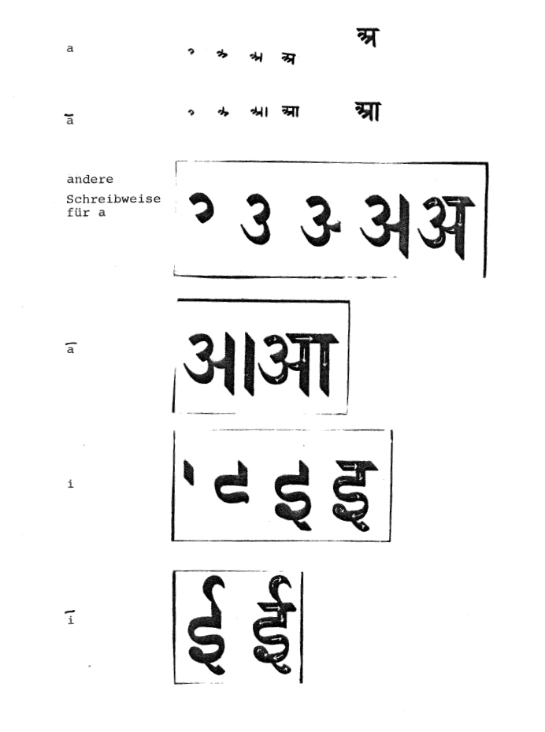
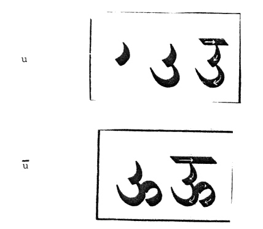
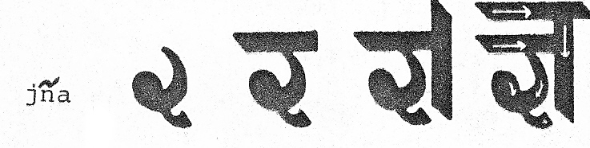

mailto:payer@payer.de
Zitierweise | cite as:
Payer, Alois <1944 - >: Sanskritkurs. -- Devanāgarī = देवनागरी. -- 8. Schriftübung 8. -- Fassung vom 2009-01-27. -- URL: http://www.payer.de/sanskritkurs/schrift08.htm
Erstmals hier publiziert: 2008-11-22
Überarbeitungen: 2009-01-27 [Verbesserungen]
Anlass: Lehrveranstaltungen 1980 - 1984
©opyright: Dieser Text steht der Allgemeinheit zur Verfügung. Eine Verwertung in Publikationen, die über übliche Zitate hinausgeht, bedarf der ausdrücklichen Genehmigung des Verfassers
Dieser Text ist Teil der Abteilung Sanskrit von Tüpfli's Global Village Library
Falls Sie die diakritischen Zeichen nicht dargestellt bekommen, installieren Sie eine Schrift mit Diakritika wie z.B. Tahoma.
Die Devanāgarī-Zeichen sind in Unicode kodiert. Sie benötigen also eine Unicode-Devanāgarī-Schrift.
Vokalzeichen für den Wortanfang, falls das Wort nicht in der Schreibung mit einem vorhergehenden Wort verbunden ist:


Wenn im Wort oder Satz zwei oder mehrere Konsonanten unmittelbar aufeinander folgen, werden sie mit Ligatur (verbundenes Zeichen) geschrieben.
1. Wenn das erste der zu verbindenden Konsonantenzeichen mit dem senkrechten Strich rechts abschließt, verliert es diesen Strich und wird vor den zweiten Konsonanten gesetzt.
Ausnahme: wenn das zweite Konsonantenzeichen न् oder ल् ist, wird dieses mit Verlust des wagrechten Strichs unter das erste Konsonantenzeichen gesetzt. Je nach Schrifttype gibt es weitere Ausnahmen, die in der folgenden aufgeführt sind. Ist in der betreffenden Schrifttype eine Ligatur nicht vorgesehen, wird ein Virāma gesetzt.
Beispiele:
In der Type, die in diesem Skript verwendet wird:
ख् kh: ख्य khya, ख्र khra
ग् g: ग्य gya, ग्र gra, ग्र्य grya
घ् gh: घ्न ghna, घ्म ghma, घ्र ghra
च् c: च्च cca, च्छ ccha, च्छ्र cchra, च्ञ cña, च्म cma
ज् j: ज्ज jja, ज्झ jjha, ज्ञ jña, ज्ञ्य jñya, ज्म jma, ज्र jra
ञ् ñ: ञ्च ñca, ञ्छ ñcha, ञ्ज ñja
ण् ṇ: ण्ट ṇṭa, ण्ठ ṇṭha, ण्ड ṇḍa, ण्ढ ṇḍha, ण्ण ṇṇa, ण्म ṇma
त् t: त्क tka, त्त tta, त्त्य ttya, त्त्र ttra, त्त्व ttva, त्थ ttha, त्न tna, त्प tpa, त्र tra, त्र्य trya, त्व tva, त्स tsa
थ् th: थ्य thya
ध् dh: ध्न dhna, ध्म dhma, ध्र dhra, ध्व dhva
न् n: न्त nta, न्त्य ntya, न्त्र ntra, न्द nda, न्द्र ndra, न्ध ndha, न्ध्र ndhra, न्न nna, न्य nya
प् p: प्त pta, प्न pna, प्म pma, प्र pra, प्ल pla, प्स psa
ब् b: ब्ज bja, ब्द bda, ब्ध bdha, ब्ब bba, ब्भ bbha, ब्र bra
भ् bh: भ्न bhna, भ्य bhya, भ्र bhra
म् m: म्न mna, म्प mpa, म्ब mba, म्र mra, म्ल mla
य् y: य्य yya, य्व yva
ल् l: ल्क lka, ल्प lpa, ल्ल lla, ल्व lva
व् v: व्न vna, व्य vya, व्र vra
श् ś: श्च śca, श्च्य ścya, श्न śna, श्य śya, श्र śra, श्ल śla, श्व śva श्व्य śvya
ष् ṣ: ष्ट ṣṭa, ष्ट्य ṣṭya, ष्ट्र ṣṭra, ष्ट्र्य ṣṭrya, ष्ट्र्व ṣṭrva, ष्ठ ṣṭha, ष्ठ्य ṣṭhya, ष्ण ṣṇa, ष्ण्य ṣṇya, ष्म ṣma,
स् s: स्क ska, स्ख skha, स्त sta, स्त्य stya, स्त्र stra, स्त्व stva, स्थ stha, स्न sna, स्प spa, स्र sra
Beachten Sie die Schreibung von jña:

Anlautendes -a, das gemäß den Satzsandhiregeln elidiert (-as + a- » -o ' ) wird durch den sog. Avagraha bezeichnet:
ऽ
z.B.
देवो ऽग्निः = devo 'gniḥ
A) Schreiben Sie alle in der obigen Liste vorkommenden Ligaturen
B) Schreiben und übersetzen Sie:
1. devo viṣṇuḥ.
2. sādhuścaitanyaḥ.
3. devo 'gniḥ.
4. deva indraḥ.
5. devaḥ kṛṣṇaḥ.
6. vaiśyaḥ.
7. guruścandrakīrtiḥ.
8. vaiśyastulādhāraḥ.
9. īśvaro viṣṇuḥ.
10. śiva īśvaraḥ.
11. devyumā.
12. devatānnapūrṇā.
13. sādhvī gurvī.
14. devyo gurvyaḥ.
15. devo nṛtyati.
16. kavirmanyate.
17. kaviḥ smarati.
18. devā yudhyante.
C) Schreiben Sie:
agraṃ agniḥ ākāśa ūrdhvaṃ īpsitaḥ āptaṃ udayo īśo āsanno uttamaṃ
D) Lesen, transliterieren und übersetzen Sie:
शूद्रा नृत्यन्ति | साध्व्यः स्मरन्ति | देव्यो मन्यन्ते | योधाञ्जयति | गुरूञ्छृणोति | पशूल्लंभते | साधुः स्वर्गं गच्छति | साधवो गुरूञ्छृण्वन्ति | नरकांश्च स्वर्गांश्च गच्छन्ति | सृष्टिः | तन्वन्ति |
Zu Lektion 9